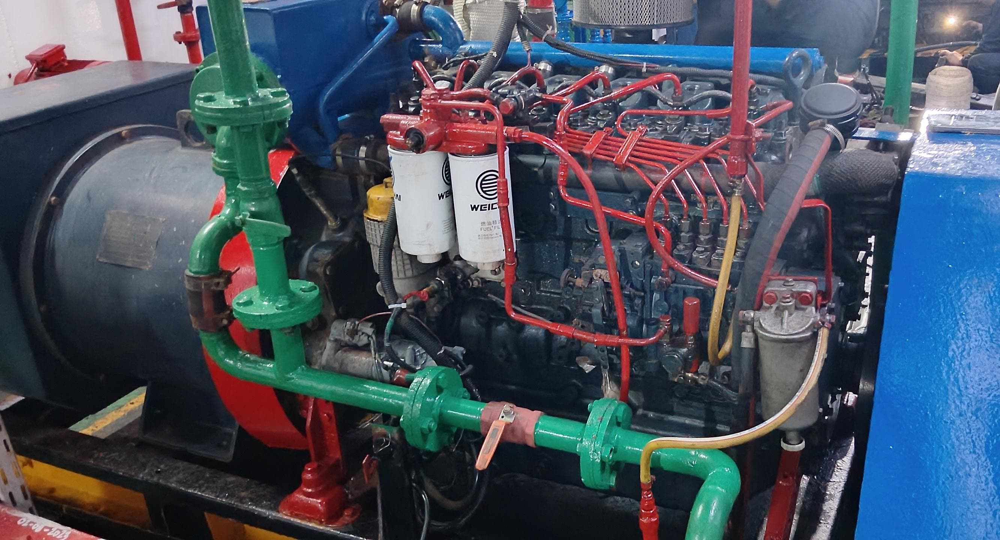

Halo nama saya Theodorus Indra Priyana
Pemula pembuat web dan
bersekolah di SMKN Bungursari
Halo, saya Theo. Saya berasal dari Purwakarta, Jawa barat. Saya memulai belajar membuat web tahun ini dengan mengikuti bimbingan dari seorang pembimbing PKL dan dari sumber internet. Projek pertama saya yaitu ini membuat web tentang saya

PENGALAMAMAN
Pengalaman saya
saya mempunyai pengalaman di biding Teknik Mesin.
Dari kecil saya diajak Bapak saya ikut bekerja
jadi pengalaman saya seperti mengikuti tahun umur saya